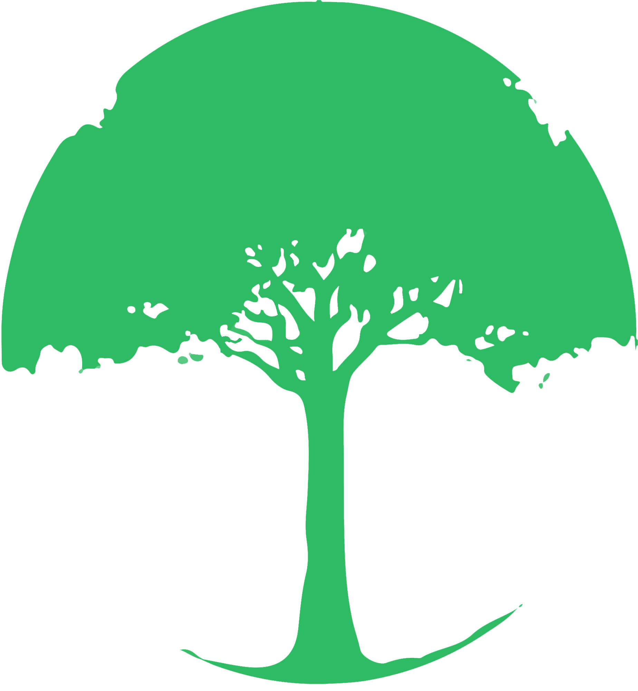

Project Lorecraft aims to revive the lore of our planet through the most expedient means of this generation. A modern text RPG platform will be built for storytellers and game designers to retell the important lore of our world in an effort to stem the tide of deculturalization.
The issues we face as a global society, organizations and even just as individuals have been faced before in the history of our world. The case studies and answers to our seemingly trying problems are embedded in the stories, histories and folklore of our various esteemed cultures.
This is a sincere appeal to the public for help. Expertise, advice and input from all various fields and disciplines are needed in order for us to succeed. A seed community will be created to facilitate discussion around the topic. If this mission resonates with you at all, we’d like to express our utmost gratitude and invite you into our budding community.
Raymond Luong | Software Engineer
Favorite RPG: LegendMUD. Favorite League of Legends champion: Fiddlesticks. Lover of history and philosophy. Most recent favorite book: Meditations by Marcus Aurelius.
Kevin Egami | Software Engineer
Favorite RPG: FFVII. Favorite League of Legends champion: Riven. An avid reader of fiction novels, Kevin enjoys classics to contemporary spreading across all genres. His most recent favorite book: All the Light We Cannot See by Anthony Doerr.
Cali Inouye | Graphic Designer
Something about Cali